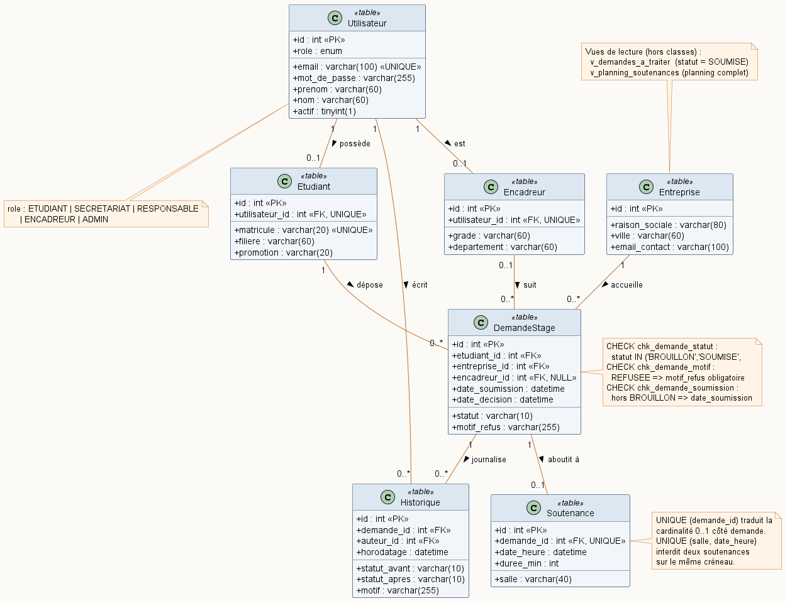

Figure 1 — Cas d'utilisation de l'application de gestion de stage
Le système modélisé s'appelle « Application de gestion de stage ». Il couvre le parcours d'un dossier, du dépôt par l'étudiant jusqu'à la soutenance. Le diagramme de cas d'utilisation retient quatre acteurs, conformément au modèle tracé en classe.
Le rectangle délimite l'application. Le cas « Se connecter » est transversal : les quatre
cas principaux le <<include>>, ce qui traduit l'obligation de s'authentifier avant
toute opération. Les cas « Gérer son compte » et « Gérer une demande » se
ramifient en deux cas spécialisés : soumettre ou consulter pour l'étudiant, confirmer ou refuser pour le
responsable.
| Relation | Justification |
|---|---|
| Étudiant — Gérer son compte | Seul l'étudiant dépose et consulte ses propres demandes ; le compte porte le matricule. |
| Responsable — Gérer une demande | La décision appartient au responsable : confirmation ou refus motivé. |
| Responsable — Programmer une soutenance | La programmation suit la validation et engage la salle et le créneau. |
| Administrateur — Gérer les comptes | Création, désactivation et changement de rôle des comptes. |
| Administrateur ◁— Responsable | Généralisation : l'administrateur hérite des cas du responsable et y ajoute la gestion des comptes. |
| Gérer son compte ◁— Soumettre / Consulter | Spécialisation : les deux sous-cas précisent le cas général. |
| Gérer une demande ◁— Confirmer / Refuser | Les deux issues possibles d'une instruction, jamais simultanées. |
| Les quatre cas — Se connecter | <<include>> : aucune opération sans authentification préalable. |
Sept classes correspondent aux sept tables du schéma. Un compte (utilisateur) donne lieu à une
fiche étudiant ou à une fiche encadreur, jamais aux deux. Un étudiant dépose plusieurs demandes,
une entreprise en accueille plusieurs, un encadreur en suit plusieurs. Une demande porte un journal de
transitions et aboutit au plus à une soutenance ; l'unicité est tenue par UNIQUE (demande_id).

| Association | Cardinalités | Traduction SQL |
|---|---|---|
| Utilisateur — Étudiant | 1 — 0..1 | etudiant.utilisateur_id UNIQUE + FK ON DELETE CASCADE |
| Utilisateur — Encadreur | 1 — 0..1 | encadreur.utilisateur_id UNIQUE + FK ON DELETE CASCADE |
| Utilisateur — Historique | 1 — 0..* | historique.auteur_id FK (auteur de la transition) |
| Étudiant — DemandeStage | 1 — 0..* | demande_stage.etudiant_id FK ON DELETE CASCADE |
| Entreprise — DemandeStage | 1 — 0..* | demande_stage.entreprise_id FK (pas de suppression en cascade) |
| Encadreur — DemandeStage | 0..1 — 0..* | demande_stage.encadreur_id NULL, FK ON DELETE SET NULL |
| DemandeStage — Historique | 1 — 0..* | historique.demande_id FK ON DELETE CASCADE |
| DemandeStage — Soutenance | 1 — 0..1 | soutenance.demande_id UNIQUE + FK ON DELETE CASCADE |
| Table | Colonnes | Règles portées par la base |
|---|---|---|
| utilisateur | id, email, mot_de_passe, role, prenom, nom, actif | email UNIQUE ; role dans les cinq valeurs ; mot de passe haché bcrypt |
| etudiant | id, utilisateur_id, matricule, filiere, promotion | utilisateur_id UNIQUE ; matricule UNIQUE |
| encadreur | id, utilisateur_id, grade, departement | utilisateur_id UNIQUE ; un compte = une fiche |
| entreprise | id, raison_sociale, ville, email_contact | (raison_sociale, ville) UNIQUE ; email_contact facultatif |
| demande_stage | id, etudiant_id, entreprise_id, encadreur_id, statut, motif_refus, date_soumission, date_decision | Quatre CHECK : statut énuméré, motif obligatoire si refus, dates cohérentes avec le statut |
| historique | id, demande_id, statut_avant, statut_apres, auteur_id, motif, horodatage | Statuts avant/après contrôlés ; horodatage par défaut CURRENT_TIMESTAMP |
| soutenance | id, demande_id, date_heure, salle, duree_min | demande_id UNIQUE ; (salle, date_heure) UNIQUE ; durée entre 20 et 90 min |
Deux vues complètent le schéma : v_demandes_a_traiter (les demandes au statut
SOUMISE, pour la file du responsable) et v_planning_soutenances (planning avec
étudiant, entreprise et encadreur). Les vues ne stockent rien : elles évitent de dupliquer les jointures
dans le code.
Objectif. Faire passer une demande de SOUMISE à VALIDEE ou à
REFUSEE, puis permettre l'affectation d'un encadreur et la programmation d'une soutenance.
Acteur principal : responsable. Précondition : la demande est au statut
SOUMISE et son auteur est l'étudiant propriétaire.
| Étape | Action | Résultat ou erreur |
|---|---|---|
| 1 | Le responsable ouvre la file des demandes à traiter. | Liste issue de v_demandes_a_traiter. |
| 2 | Il choisit Confirmer. | Statut VALIDEE, date_decision renseignée. |
| 3 | Il choisit Refuser sans saisir de motif. | 400 : « Le motif de refus est obligatoire. » |
| 4 | Il saisit un motif puis confirme le refus. | Statut REFUSEE, motif conservé ; l'étudiant peut repasser en BROUILLON. |
| 5 | Il tente de décider une demande déjà VALIDEE. | 409 : transition VALIDEE → REFUSEE interdite. |
| 6 | L'administrateur affecte un encadreur à une demande validée. | VALIDEE exigée, sinon 409. |
| 7 | Il programme la soutenance (salle B12, 10/12/2026 09:00, 40 min). | Ligne créée ; un créneau déjà pris renvoie 409. |
Chaque transition écrit une ligne d'historique (auteur, statut avant, statut après, motif,
horodatage) dans la même transaction que le changement de statut : soit les deux sont écrits, soit aucun.
Le schéma ne se contente pas de décrire les données : il refuse les états incohérents. Cinq insertions volontairement invalides ont été exécutées après le chargement du jeu d'essai ; les cinq ont échoué, ce qui est le résultat attendu.
| Donnée tentée | Contrainte violée | Erreur observée |
|---|---|---|
Statut ARCHIVEE | chk_demande_statut | ERROR 3819 — Check constraint is violated |
| Refus sans motif | chk_demande_motif | ERROR 3819 — Check constraint is violated |
| Deuxième soutenance pour la même demande | uq_soutenance_demande | ERROR 1062 — Duplicate entry '2' |
| Salle et créneau déjà réservés | uq_soutenance_creneau | ERROR 1062 — Duplicate entry 'B12-2026-12-10 09:00:00' |
Entreprise inexistante (id = 999) | fk_demande_entreprise | ERROR 1452 — a foreign key constraint fails |
+---------------+-----------+ | table_name | nb_lignes | +---------------+-----------+ | demande_stage | 4 | | soutenance | 1 | +---------------+-----------+
Les comptages sont identiques avant et après les tentatives : aucune ligne n'a été ajoutée. Sortie
complète : tp3/preuves/contraintes.txt.
Le jeu d'essai contient 8 comptes, 3 étudiants, 2 encadreurs, 2 entreprises, 4 demandes, 5 événements
d'historique et 1 soutenance. Les quatre demandes couvrent les quatre statuts du cycle de vie. La sortie
ci-dessous a été obtenue en rejouant 001_schema.sql puis 002_seed.sql sur une base
vide, suivis de 003_verification.sql.
+---------------+-----------+ | table_name | nb_lignes | +---------------+-----------+ | etudiant | 3 | | entreprise | 2 | | demande_stage | 4 | | soutenance | 1 | | historique | 5 | | utilisateur | 8 | +---------------+-----------+ +-----------+-------------+ | statut | nb_demandes | +-----------+-------------+ | BROUILLON | 1 | | SOUMISE | 1 | | VALIDEE | 1 | | REFUSEE | 1 | +-----------+-------------+ +------------+--------------+-----------------+-----------+----------------------+---------+---------------------+ | demande_id | etudiant_nom | etudiant_prenom | matricule | entreprise | ville | date_soumission | +------------+--------------+-----------------+-----------+----------------------+---------+---------------------+ | 1 | KPANOU | Rachid | SIL-23117 | Sahara Data Services | Cotonou | 2026-09-14 08:45:00 | +------------+--------------+-----------------+-----------+----------------------+---------+---------------------+
La vue v_demandes_a_traiter ne renvoie que la demande SOUMISE : c'est exactement
la file que voit le responsable. Le planning (v_planning_soutenances) contient la soutenance de
Clarisse SODJINOU chez Delta Logistique, salle B12, le 10 décembre 2026 à 09:00.
utilisateur porte cinq rôles : SECRETARIAT et
ENCADREUR s'ajoutent aux trois acteurs métier. Ce ne sont pas des tables
supplémentaires : ce sont des comptes de la même table, avec des autorisations différentes. Le
découpage du diagramme reste celui qui a été tracé en classe ; le code applique le rôle stocké en base.